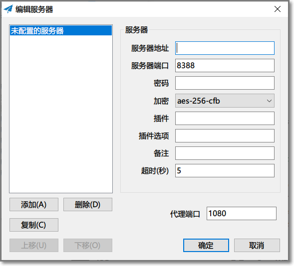
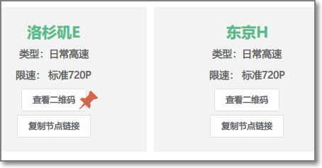

Shadowsocks 设置方法 (Windows)¶
系统要求¶
在安装之前，请始终确保您的系统满足最低系统要求。
您需要具备 Windows 7 SP1 或更高版本才能运行 Shadowsocks。如果您的操作系统版本较旧， 则请先升级到 Windows 7 SP1 或更高版本。
NET Framework: 如果你的计算机未安装.NET Framework, 请点击 这里 下载最新版本的 .NET Framework。
安装 Shadowsocks¶
按照下面的说明在 Windows 中下载并安装 Shadowsocks。
1. 下载客户端¶
访问 Shadowsocks Windows 客户端 下载页面。
下载最新版本的 Shadowsocks-x.x.x.zip (x.x.x为版本号) 。
{kind=link}
或是前往 客户端中心 下载
2. 解压客户端¶
右键 Shadowsocks-x.x.x.zip 压缩文件 > “全部解压缩”。
点击 “浏览” 选择想要解压到的文件目录 > “完成时显示提取的文件” > “提取”。
双击运行 Shadowsocks.exe。
{kind=link}
{kind=link}
{kind=link}
配置 Shadowsocks 账号¶
在您的计算机上， 执行下列任一操作
手动添加账号¶
从分享节点的网站中依次填入相应信息，确定即可
{kind=link}
二维码方式增加节点¶
在分享节点的网站中一般都有查看二维码的功能。
{kind=link}
此二维码同样适用于其他客户端。
右键状态栏 > “服务器” > “扫描屏幕上的二维码”。
点击 “启用系统代理” 。
{kind=link}
配置文件添加账号¶
将
gui-config.json拖移到和Shadowsocks.exe同一个文件目录下。
{kind=link}
双击
Shadowsocks.exe> 右键状态栏 > 单击 “服务器” > 即可看到服务器信息已自动填充完成。
即可看到服务器信息已自动填充完成
右键状态栏 > “启用系统代理”。
{kind=link}
配置系统代理模式¶
右键状态栏 > “系统代理模式” > “PAC模式”。
如果使用 PAC 模式无法访问网站，请点击 Pac文件下载 下载 pac 配置文件，将
pac.txt文件拖放在与Shadowsocks.exe相同的文件目录下。
{kind=link}
{kind=link}
注意事项¶
PAC模式: 表示可以实现自动代理， 及本来可以访问的网站不会经过代理，推荐日常使用。
全局模式: 表示计算机内大多数流量都会经过代理，不推荐日常使用。